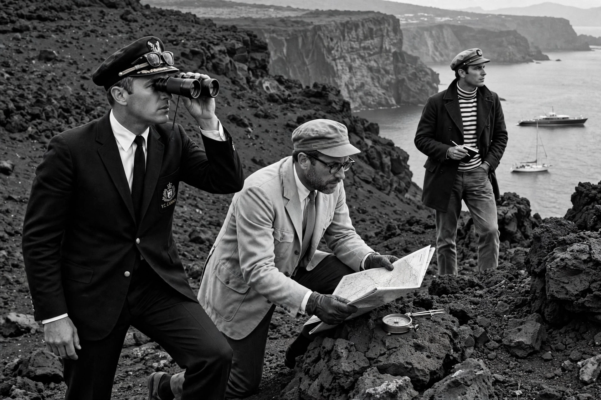

| L'Avventura | |
|---|---|
 The search on Lisca Bianca island | |
| Directed by | Michelangelo Antonioni |
| Written by | Michelangelo Antonioni, Elio Bartolini, Tonino Guerra |
| Starring | Monica Vitti, Gabriele Ferzetti, Lea Massari |
| Release date | 1960 |
| Country | Italy |
| Language | Italian |
L'Avventura (English: The Adventure) is a 1960 Italian drama film directed by Michelangelo Antonioni. Developed from a story idea by Antonioni with co-writers Elio Bartolini and Tonino Guerra, the film concerns the disappearance of a young woman (Lea Massari) during a boating trip in the Mediterranean, and the subsequent search by her lover (Gabriele Ferzetti) and her best friend (Monica Vitti), who slowly fall for each other as the quest fades.
Anna, a wealthy young Roman woman, joins her friend Claudia and her lover Sandro on a yacht trip to the volcanic Aeolian Islands. After an argument with Sandro, Anna vanishes on the barren island of Lisca Bianca. A search finds no trace of her. Sandro and Claudia travel through Sicily following faint leads; gradually their search loses urgency and is replaced by a tentative, guilt-ridden romance. In the final scene, after Claudia discovers Sandro with another woman, she reaches out to touch his head in a gesture of pity as he weeps on a bench, Mount Etna looming in the distance.
L'Avventura famously frustrates narrative expectations: the mystery is never solved, and Antonioni's long takes and use of landscape to externalise emotional emptiness made it a founding work of modernist cinema. Booed at its Cannes premiere in 1960, it nevertheless won the Jury Prize there, and a critics' statement defended its importance. In the 1962 Sight & Sound poll it was voted the second-greatest film of all time, and it established Monica Vitti as Antonioni's muse.